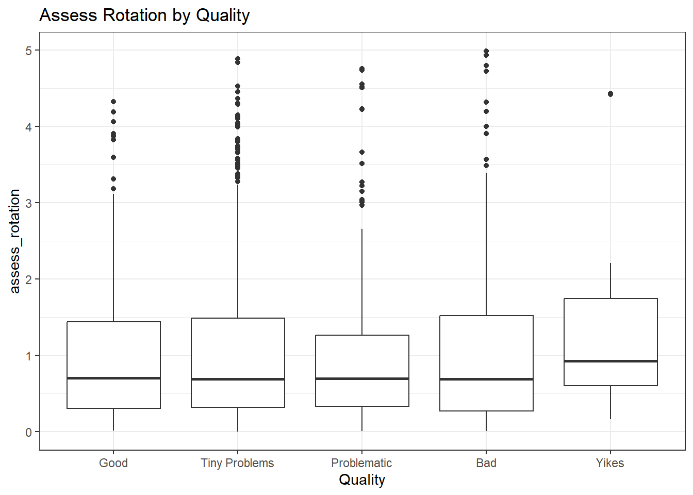
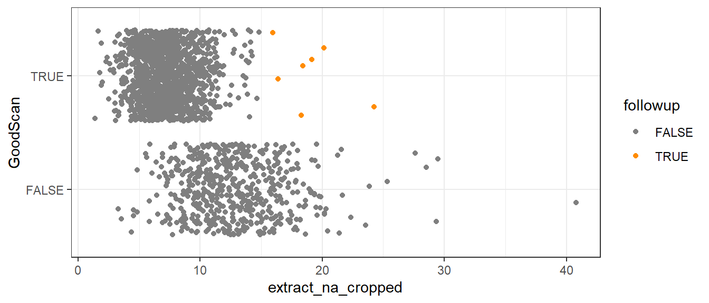

full.data <- read.csv2("../data/std_and_cropped_data_12_20_2022.csv", sep=",")
full.data <- full.data %>% mutate(
Quality = factor(Quality, levels = c("Good", "Tiny Problems", "Problematic", "Bad", "Yikes"), ordered = TRUE),
Problem = factor(Problem, levels = c("Good", "Damage", "Holes", "Feathering", "Rotation-Staging"), ordered = FALSE),
GoodScan = Quality %in% c("Good", "Tiny Problems") %>% factor(),
LAPD_id = sprintf("FAU%3d-B%s-L%d",FAU, Bullet, Land),
# This is the features ran against the full image
assess_percentile_na_proportion = as.numeric(assess_percentile_na_proportion),
assess_col_na = as.numeric(assess_col_na),
extract_na = as.numeric(extract_na),
assess_middle_na_proportion = as.numeric(assess_middle_na_proportion),
assess_rotation = as.numeric(assess_rotation),
assess_bottomempty = as.numeric(assess_bottomempty),
assess_median_na_proportion = as.numeric(assess_median_na_proportion),
# This is the features ran against the cropped image
assess_percentile_na_proportion_cropped = as.numeric(assess_percentile_na_proportion_cropped),
assess_col_na_cropped = as.numeric(assess_col_na_cropped),
extract_na_cropped = as.numeric(extract_na_cropped),
assess_bottomempty_cropped = as.numeric(assess_bottomempty_cropped),
assess_median_na_proportion_cropped = as.numeric(assess_median_na_proportion_cropped)
)
followupScans <- data.frame()Scan Quality Assessor: Model Comparison
Introduction
This document will give well commented exact technical details to show the comparison of various models we tested and compared to determine the best candidate for use in a production environment.
We will investigate the ability of our features to predict the quality of a scan using a variety of methods. It should be noted that given our current classification system Good > Tiny Problems > Problematic > Bad > Yikes, we will consider that any scan worse than Tiny Problems should be re-scanned by the user. However, this is a tool meant to aid a user in deciding and is not to be taken as a sole source of truth.
Models will be broken into two classification types, ordinal and binary. In the ordinal models, we will try to accurately predict which of the five categories a scan falls into. As quality is a subjective rating, we will focus more on being within one step of the assigned rating than going for perfect agree, although perfect agreement would be optimal. In the binary setting, we will group the scans as Good (1) and Bad (0) as binary classifications are often easier. Good (1) scans will be scans currently labelled as Good or Tiny Problems, with Bad (0) scans being Problematic, Bad, and Yikes.
- Is there a more mathy and rigorous reason we chose these models? They are pretty much just my go-tos, and the only ones I know for categorical
XXX results first introduction to save people time
The models we will train are logistic regressions, and random forests. These models have often proven to be sufficiently explainable for forensic purposes, as well as statistically sound in many environments.
Data handling and type setting
Feature Analysis
In this investigation, we are going to look at the features calculated against the full image. This investigation will tell us more about the predictive power of each feature, and tell us how different the quality categories are from each other.
XXX Upfront table of the results
| Ord Log | Num Log | Ord For | Num For | |
|---|---|---|---|---|
| TPR | ||||
| TNR |
XXX Our results are mostly in graphical form. Should I use some kinda test?
standard.data <- full.data[,1:12 & 18:19]
knitr::kable(table(standard.data$Quality, standard.data$Problem),
caption = "Full Data Problem by Quality")| Good | Damage | Holes | Feathering | Rotation-Staging | |
|---|---|---|---|---|---|
| Good | 253 | 0 | 0 | 0 | 0 |
| Tiny Problems | 0 | 1 | 991 | 61 | 6 |
| Problematic | 0 | 3 | 10 | 235 | 15 |
| Bad | 0 | 64 | 0 | 179 | 10 |
| Yikes | 0 | 1 | 1 | 18 | 2 |
Assess Percentile NA Proportion
summary(standard.data$assess_percentile_na_proportion) Min. 1st Qu. Median Mean 3rd Qu. Max.
0.00000 0.00331 0.01088 0.02073 0.02716 0.25525 ggplot(standard.data, aes(x=Quality, y=assess_percentile_na_proportion)) +
geom_boxplot() +
ggtitle("Assess Percentile NA Proportion by Quality")
summary(glm(Quality ~ assess_percentile_na_proportion,
data=standard.data, family="binomial"))Warning: glm.fit: fitted probabilities numerically 0 or 1 occurred
Call:
glm(formula = Quality ~ assess_percentile_na_proportion, family = "binomial",
data = standard.data)
Deviance Residuals:
Min 1Q Median 3Q Max
-4.0868 0.0000 0.0104 0.2550 1.4413
Coefficients:
Estimate Std. Error z value Pr(>|z|)
(Intercept) -0.6017 0.1206 -4.991 6.02e-07 ***
assess_percentile_na_proportion 585.1354 45.1784 12.952 < 2e-16 ***
---
Signif. codes: 0 '***' 0.001 '**' 0.01 '*' 0.05 '.' 0.1 ' ' 1
(Dispersion parameter for binomial family taken to be 1)
Null deviance: 1476.42 on 1849 degrees of freedom
Residual deviance: 782.01 on 1848 degrees of freedom
AIC: 786.01
Number of Fisher Scoring iterations: 10In the boxplot we can see that as Assess Percentile NA Proportion increases, the quality of the image decreases. The IQR of the quality categories has overlap, but the medians are consistently different in the chart. The logistic regression also shows that there is overwhelming evidence, with reservation, for this being a useful feature in explaining the quality.
Assess Col NA
summary(standard.data$assess_col_na) Min. 1st Qu. Median Mean 3rd Qu. Max.
0.2573 0.9244 1.0755 1.1654 1.2928 4.3684 ggplot(standard.data, aes(x=Quality, y=assess_col_na)) +
geom_boxplot() +
ggtitle("Assess Col NA by Quality")
summary(glm(Quality ~ assess_col_na,
data=standard.data, family="binomial"))
Call:
glm(formula = Quality ~ assess_col_na, family = "binomial", data = standard.data)
Deviance Residuals:
Min 1Q Median 3Q Max
-2.3488 0.1629 0.4009 0.5954 1.8298
Coefficients:
Estimate Std. Error z value Pr(>|z|)
(Intercept) -2.5752 0.3593 -7.167 7.66e-13 ***
assess_col_na 4.3089 0.3727 11.563 < 2e-16 ***
---
Signif. codes: 0 '***' 0.001 '**' 0.01 '*' 0.05 '.' 0.1 ' ' 1
(Dispersion parameter for binomial family taken to be 1)
Null deviance: 1476.4 on 1849 degrees of freedom
Residual deviance: 1269.5 on 1848 degrees of freedom
AIC: 1273.5
Number of Fisher Scoring iterations: 6In the boxplot we can see that as Assess Col NA increases, the quality of the image decreases. The IQR of the quality categories has overlap, but the medians are consistently different in the chart, with the exception of “Good” and “Tiny Problems” which are very similar. The logistic regression also shows that there is overwhelming evidence for this being a useful feature in explaining the quality.
Extract NA
summary(standard.data$extract_na) Min. 1st Qu. Median Mean 3rd Qu. Max.
3.667 12.797 15.082 15.915 18.303 48.454 ggplot(standard.data, aes(x=Quality, y=extract_na)) +
geom_boxplot() +
ggtitle("Extract NA by Quality")
summary(glm(Quality ~ extract_na,
data=standard.data, family="binomial"))
Call:
glm(formula = Quality ~ extract_na, family = "binomial", data = standard.data)
Deviance Residuals:
Min 1Q Median 3Q Max
-2.6889 0.1483 0.3688 0.5775 1.9821
Coefficients:
Estimate Std. Error z value Pr(>|z|)
(Intercept) -3.09877 0.36353 -8.524 <2e-16 ***
extract_na 0.35060 0.02753 12.736 <2e-16 ***
---
Signif. codes: 0 '***' 0.001 '**' 0.01 '*' 0.05 '.' 0.1 ' ' 1
(Dispersion parameter for binomial family taken to be 1)
Null deviance: 1476.4 on 1849 degrees of freedom
Residual deviance: 1226.7 on 1848 degrees of freedom
AIC: 1230.7
Number of Fisher Scoring iterations: 6In the boxplot we can see that as Extract NA increases, the quality of the image decreases. The IQR of the quality categories has overlap, but the medians are consistently different in the chart. The logistic regression also shows that there is overwhelming evidence for this being a useful feature in explaining the quality.
Assess Middle NA Proportion
summary(standard.data$assess_middle_na_proportion) Min. 1st Qu. Median Mean 3rd Qu. Max.
0.0002776 0.0221251 0.0392280 0.0517308 0.0688228 0.3851669 ggplot(standard.data, aes(x=Quality, y=assess_middle_na_proportion)) +
geom_boxplot() +
ggtitle("Assess Middle NA Proportion by Quality")
summary(glm(Quality ~ assess_middle_na_proportion,
data=standard.data, family="binomial"))
Call:
glm(formula = Quality ~ assess_middle_na_proportion, family = "binomial",
data = standard.data)
Deviance Residuals:
Min 1Q Median 3Q Max
-2.72629 0.03616 0.24091 0.58568 1.34175
Coefficients:
Estimate Std. Error z value Pr(>|z|)
(Intercept) -0.4164 0.1454 -2.864 0.00419 **
assess_middle_na_proportion 73.9873 5.7409 12.888 < 2e-16 ***
---
Signif. codes: 0 '***' 0.001 '**' 0.01 '*' 0.05 '.' 0.1 ' ' 1
(Dispersion parameter for binomial family taken to be 1)
Null deviance: 1476.4 on 1849 degrees of freedom
Residual deviance: 1115.6 on 1848 degrees of freedom
AIC: 1119.6
Number of Fisher Scoring iterations: 7In the boxplot we can see that as Extract NA increases, the quality of the image decreases. The IQR of the quality categories has overlap, but the medians are consistently different in the chart. The logistic regression also shows that there is overwhelming evidence for this being a useful feature in explaining the quality.
Assess Rotation
summary(standard.data$assess_rotation) Min. 1st Qu. Median Mean 3rd Qu. Max.
0.0000 0.3143 0.6904 1.0279 1.4601 4.9878 ggplot(standard.data, aes(x=Quality, y=assess_rotation)) +
geom_boxplot() +
ggtitle("Assess Rotation by Quality")
summary(glm(Quality ~ assess_rotation,
data=standard.data, family="binomial"))
Call:
glm(formula = Quality ~ assess_rotation, family = "binomial",
data = standard.data)
Deviance Residuals:
Min 1Q Median 3Q Max
-2.0678 0.5270 0.5443 0.5507 0.5555
Coefficients:
Estimate Std. Error z value Pr(>|z|)
(Intercept) 1.79066 0.09775 18.319 <2e-16 ***
assess_rotation 0.05131 0.07105 0.722 0.47
---
Signif. codes: 0 '***' 0.001 '**' 0.01 '*' 0.05 '.' 0.1 ' ' 1
(Dispersion parameter for binomial family taken to be 1)
Null deviance: 1476.4 on 1849 degrees of freedom
Residual deviance: 1475.9 on 1848 degrees of freedom
AIC: 1479.9
Number of Fisher Scoring iterations: 4In the boxplot, we see that there is no significant visual difference in median or IQR of Assess Rotation when grouped by Quality. The logistic regression shows no evidence that this feature can help explain the quality of an image. This feature was primarily intended for use in predicting a particular problem that occurs in scans.
Assess Bottomempty
summary(standard.data$assess_bottomempty) Min. 1st Qu. Median Mean 3rd Qu. Max.
8.516 22.669 27.540 29.903 34.634 95.394 ggplot(standard.data, aes(x=Quality, y=assess_bottomempty)) +
geom_boxplot() +
ggtitle("Assess Bottomempty by Quality")
summary(glm(Quality ~ assess_bottomempty,
data=standard.data, family="binomial"))
Call:
glm(formula = Quality ~ assess_bottomempty, family = "binomial",
data = standard.data)
Deviance Residuals:
Min 1Q Median 3Q Max
-2.4871 0.2807 0.4750 0.6070 1.0997
Coefficients:
Estimate Std. Error z value Pr(>|z|)
(Intercept) -0.577479 0.258462 -2.234 0.0255 *
assess_bottomempty 0.089585 0.009999 8.960 <2e-16 ***
---
Signif. codes: 0 '***' 0.001 '**' 0.01 '*' 0.05 '.' 0.1 ' ' 1
(Dispersion parameter for binomial family taken to be 1)
Null deviance: 1476.4 on 1849 degrees of freedom
Residual deviance: 1368.4 on 1848 degrees of freedom
AIC: 1372.4
Number of Fisher Scoring iterations: 5In the boxplot we can see that as Assess Bottomempty increases, the quality of the image decreases. The IQR of the quality categories has overlap, but the medians are consistently different in the chart. There is an observation of note that the Yikes category has a particularly large IQR. The logistic regression also shows that there is overwhelming evidence for this being a useful feature in explaining the quality.
Assess Median NA Proportion
summary(standard.data$assess_median_na_proportion) Min. 1st Qu. Median Mean 3rd Qu. Max.
0.00000 0.00331 0.01088 0.02073 0.02716 0.25525 ggplot(standard.data, aes(x=Quality, y=assess_median_na_proportion)) +
geom_boxplot() +
ggtitle("Assess Median NA Proportion by Quality")
summary(glm(Quality ~ assess_median_na_proportion,
data=standard.data, family="binomial"))Warning: glm.fit: fitted probabilities numerically 0 or 1 occurred
Call:
glm(formula = Quality ~ assess_median_na_proportion, family = "binomial",
data = standard.data)
Deviance Residuals:
Min 1Q Median 3Q Max
-4.0868 0.0000 0.0104 0.2550 1.4413
Coefficients:
Estimate Std. Error z value Pr(>|z|)
(Intercept) -0.6017 0.1206 -4.991 6.02e-07 ***
assess_median_na_proportion 585.1354 45.1784 12.952 < 2e-16 ***
---
Signif. codes: 0 '***' 0.001 '**' 0.01 '*' 0.05 '.' 0.1 ' ' 1
(Dispersion parameter for binomial family taken to be 1)
Null deviance: 1476.42 on 1849 degrees of freedom
Residual deviance: 782.01 on 1848 degrees of freedom
AIC: 786.01
Number of Fisher Scoring iterations: 10In the boxplot we can see that as Assess Median NA Proportion increases, the quality of the image decreases. The IQR of the quality categories has overlap, but the medians are consistently different in the chart. The “Bad” and “Yikes” categories have very similar IQR and Medians. The logistic regression also shows that there is overwhelming evidence, with reservation, for this being a useful feature in explaining the quality.
Cross Correlations
XXX include https://heike.github.io/ggpcp/ and a scatterplot of the data
correlations <- cor(standard.data[,6:12])
corrplot(correlations, method = "shade")
There is significant correlation between most of the variables except assess rotation.
Model Analysis
# Function intended to standardize outputs a bit better
numerical.Metrics <- function(test, modelName) {
metrics <- confusionMatrix(factor(round(test$num.predictions)),
test$num.Quality, mode="everything", positive = "1")
print(metrics)
#returns c(modelName, TPR, TNR, F1, Kappa)
return(c(modelName, round(metrics$byClass[1], 4), round(metrics$byClass[2], 4),
round(metrics$byClass[7], 4), round(metrics$overall[2], 4)))
}XXX Why did I not include all the features in the models?!?!?! GRRRRR XXX REDO: all models with correct equations
| Standard Multinomial Logistic Regression | Standard Numerical Logistic Regression | Standard Ordinal Random Forest | Standard Numerical Random Forest | |
|---|---|---|---|---|
| F1 | ||||
| TPR | ||||
| TNR |
Categorical Predictions:
For the purposes of this analysis, consider that the scanner using this model to decide if a scan needs to be re-done will be instructed that Good and Tiny Problems predictions likely don’t need to be re-done. However, Problematic, Bad, and Yikes scans have a high likelihood of needing to be redone.
Quantitative Predictions:
--cutoff is....sample <- sample(c(TRUE, FALSE), nrow(standard.data), replace=TRUE, prob=c(0.75,0.25))
train <- standard.data[sample, ]
test <- standard.data[!sample, ]
train$followup <- FALSE
train$num.Quality <- 0
train$num.Quality[train$Quality == "Good"] <- 1
train$num.Quality[train$Quality == "Tiny Problems"] <- 1
train$num.Quality <- factor(train$num.Quality, levels = c(0, 1))
test$followup <- FALSE
test$num.Quality <- 0
test$num.Quality[test$Quality == "Good"] <- 1
test$num.Quality[test$Quality == "Tiny Problems"] <- 1
test$num.Quality <- factor(test$num.Quality, levels = c(0, 1))
knitr::kable(table(standard.data$Quality, standard.data$Problem),
caption = "Full Data Problem by Quality")| Good | Damage | Holes | Feathering | Rotation-Staging | |
|---|---|---|---|---|---|
| Good | 253 | 0 | 0 | 0 | 0 |
| Tiny Problems | 0 | 1 | 991 | 61 | 6 |
| Problematic | 0 | 3 | 10 | 235 | 15 |
| Bad | 0 | 64 | 0 | 179 | 10 |
| Yikes | 0 | 1 | 1 | 18 | 2 |
knitr::kable(table(train$Quality, train$Problem), caption = "Train Problem by Quality")| Good | Damage | Holes | Feathering | Rotation-Staging | |
|---|---|---|---|---|---|
| Good | 194 | 0 | 0 | 0 | 0 |
| Tiny Problems | 0 | 1 | 762 | 45 | 6 |
| Problematic | 0 | 3 | 9 | 175 | 11 |
| Bad | 0 | 47 | 0 | 140 | 6 |
| Yikes | 0 | 1 | 1 | 13 | 2 |
knitr::kable(table(test$Quality, test$Problem), caption = "Test Problem by Quality")| Good | Damage | Holes | Feathering | Rotation-Staging | |
|---|---|---|---|---|---|
| Good | 59 | 0 | 0 | 0 | 0 |
| Tiny Problems | 0 | 0 | 229 | 16 | 0 |
| Problematic | 0 | 0 | 1 | 60 | 4 |
| Bad | 0 | 17 | 0 | 39 | 4 |
| Yikes | 0 | 0 | 0 | 5 | 0 |
knitr::kable(table(train$num.Quality), caption = "Train Numeric Quality Totals")| Var1 | Freq |
|---|---|
| 0 | 408 |
| 1 | 1008 |
knitr::kable(table(train$num.Quality, train$Problem), caption = "Train Numeric Problem by Quality")| Good | Damage | Holes | Feathering | Rotation-Staging | |
|---|---|---|---|---|---|
| 0 | 0 | 51 | 10 | 328 | 19 |
| 1 | 194 | 1 | 762 | 45 | 6 |
knitr::kable(table(test$num.Quality), caption = "Test Numeric Quality Totals")| Var1 | Freq |
|---|---|
| 0 | 130 |
| 1 | 304 |
knitr::kable(table(test$num.Quality, test$Problem), caption = "Test Numeric Problem by Quality")| Good | Damage | Holes | Feathering | Rotation-Staging | |
|---|---|---|---|---|---|
| 0 | 0 | 17 | 1 | 104 | 8 |
| 1 | 59 | 0 | 229 | 16 | 0 |
model.metrics.all = data.frame(matrix(ncol=5))
colnames(model.metrics.all) <- c("Model", "TPR", "TNR", "F1", "Kappa")Standard Multi-Nomial Logistic Regression
XXX MultiNomial Model!
The assumptions of the multinomial logisitic regression are: - Nominal dependent variable: Not met - No multi-colinearity: - Linear relationship: - No outlier or high influence points:
train.mutli = train
train.mutli$Quality <- factor(train.mutli$Quality, levels=c("Good", "Tiny Problems", "Problematic", "Bad", "Yikes"), ordered = FALSE)
train.mutli$Quality <- relevel(train.mutli$Quality, ref = "Good")
multi.model <- multinom(Quality ~ assess_percentile_na_proportion + assess_col_na +
extract_na + assess_middle_na_proportion + assess_bottomempty +
assess_median_na_proportion, data = train.mutli)
summary(multi.model)
test$Predictions <- predict(multi.model, test)To help compare these models, we will introduce a compression concept. Just as before, all scans will be divided into Good, which includes Good and Tiny Problems. Bad will include all other categories.
test$num.predictions = 0
test$num.predictions[test$Predictions == "Good"] = 1
test$num.predictions[test$Predictions == "Tiny Problems"] = 1
model.metrics.all <- rbind(model.metrics.all, numerical.Metrics(test, "Stnd Multi Log Reg"))Warning in confusionMatrix.default(factor(round(test$num.predictions)), :
Levels are not in the same order for reference and data. Refactoring data to
match.Confusion Matrix and Statistics
Reference
Prediction 0 1
0 130 304
1 0 0
Accuracy : 0.2995
95% CI : (0.2568, 0.345)
No Information Rate : 0.7005
P-Value [Acc > NIR] : 1
Kappa : 0
Mcnemar's Test P-Value : <2e-16
Sensitivity : 0.0000
Specificity : 1.0000
Pos Pred Value : NaN
Neg Pred Value : 0.2995
Precision : NA
Recall : 0.0000
F1 : NA
Prevalence : 0.7005
Detection Rate : 0.0000
Detection Prevalence : 0.0000
Balanced Accuracy : 0.5000
'Positive' Class : 1
Standard Binary regression
- (Good/Tiny = 1, Problematic/Bad/Yikes = 0)
num.logit.model <- glm(num.Quality ~ assess_percentile_na_proportion + assess_col_na +
extract_na + assess_middle_na_proportion + assess_bottomempty +
assess_median_na_proportion,
data=train, family="binomial")
summary(num.logit.model)
Call:
glm(formula = num.Quality ~ assess_percentile_na_proportion +
assess_col_na + extract_na + assess_middle_na_proportion +
assess_bottomempty + assess_median_na_proportion, family = "binomial",
data = train)
Deviance Residuals:
Min 1Q Median 3Q Max
-2.8272 -0.0928 0.2885 0.4516 3.8148
Coefficients: (1 not defined because of singularities)
Estimate Std. Error z value Pr(>|z|)
(Intercept) 4.33863 0.66852 6.490 8.59e-11 ***
assess_percentile_na_proportion -45.68310 10.47690 -4.360 1.30e-05 ***
assess_col_na -2.00321 0.68468 -2.926 0.003436 **
extract_na -0.02821 0.05589 -0.505 0.613798
assess_middle_na_proportion -41.59729 11.41217 -3.645 0.000267 ***
assess_bottomempty 0.08773 0.02911 3.013 0.002585 **
assess_median_na_proportion NA NA NA NA
---
Signif. codes: 0 '***' 0.001 '**' 0.01 '*' 0.05 '.' 0.1 ' ' 1
(Dispersion parameter for binomial family taken to be 1)
Null deviance: 1700.54 on 1415 degrees of freedom
Residual deviance: 866.04 on 1410 degrees of freedom
AIC: 878.04
Number of Fisher Scoring iterations: 6test$num.predictions <- predict(num.logit.model, test, type="response")Warning in predict.lm(object, newdata, se.fit, scale = 1, type = if (type == :
prediction from a rank-deficient fit may be misleading# XXX Figure out followup scans
test[test$num.predictions < 0.5 & test$num.Quality == 1, ]$followup = TRUE
test[test$num.predictions > 0.75 & test$num.Quality == 0, ]$followup = TRUE
ggplot(test, aes(x=num.Quality, y=num.predictions)) +
geom_boxplot() +
xlab("True Quality") +
ylab("Probability of good scan") +
ggtitle("Numerical Logistic Prediction Test Data")
ggplot(test, aes(x=num.Quality, y=num.predictions, color=followup)) +
geom_jitter() +
scale_colour_manual(values=c("grey50", "darkorange"))
The boxplot shows a general picture of the results of the model. There is a significant number of misclassified scans. Using a typical 0.5 rounding we get the confusion matrix:
model.metrics.all <- rbind(model.metrics.all, numerical.Metrics(test, "Stnd Binary Log Reg"))Confusion Matrix and Statistics
Reference
Prediction 0 1
0 97 11
1 33 293
Accuracy : 0.8986
95% CI : (0.8663, 0.9254)
No Information Rate : 0.7005
P-Value [Acc > NIR] : < 2.2e-16
Kappa : 0.7461
Mcnemar's Test P-Value : 0.001546
Sensitivity : 0.9638
Specificity : 0.7462
Pos Pred Value : 0.8988
Neg Pred Value : 0.8981
Precision : 0.8988
Recall : 0.9638
F1 : 0.9302
Prevalence : 0.7005
Detection Rate : 0.6751
Detection Prevalence : 0.7512
Balanced Accuracy : 0.8550
'Positive' Class : 1
Standard Ordinal random forest
ord.forest.model <- randomForest(Quality ~ assess_percentile_na_proportion + assess_col_na +
extract_na + assess_middle_na_proportion + assess_bottomempty +
assess_median_na_proportion, data = train,
importance = TRUE)
test$Prediction <- predict(ord.forest.model, test)To help compare these models, we once again use the previous compression metrics.
model.metrics.all <- rbind(model.metrics.all, numerical.Metrics(test, "Stnd Ord Rand For"))Confusion Matrix and Statistics
Reference
Prediction 0 1
0 97 11
1 33 293
Accuracy : 0.8986
95% CI : (0.8663, 0.9254)
No Information Rate : 0.7005
P-Value [Acc > NIR] : < 2.2e-16
Kappa : 0.7461
Mcnemar's Test P-Value : 0.001546
Sensitivity : 0.9638
Specificity : 0.7462
Pos Pred Value : 0.8988
Neg Pred Value : 0.8981
Precision : 0.8988
Recall : 0.9638
F1 : 0.9302
Prevalence : 0.7005
Detection Rate : 0.6751
Detection Prevalence : 0.7512
Balanced Accuracy : 0.8550
'Positive' Class : 1
Standard Numerical Random Forest
- (Good/Tiny = 1, Problematic/Bad/Yikes = 0)
- (Good = 1, Yikes = 0, drop others)
num.RF.model <- randomForest(num.Quality ~ assess_percentile_na_proportion + assess_col_na +
extract_na + assess_middle_na_proportion + assess_bottomempty +
assess_median_na_proportion, data = train,
importance = TRUE)
test$num.predictions <- predict(num.RF.model, test, type="prob")[,2]
test[test$num.predictions < 0.5 & test$num.Quality == 1, ]$followup = TRUE
test[test$num.predictions > 0.75 & test$num.Quality == 0, ]$followup = TRUE
ggplot(test, aes(x=num.Quality, y=num.predictions)) +
geom_boxplot() +
xlab("True Quality") +
ylab("Probability of good scan") +
ggtitle("Numerical Logistic Prediction Test Data")
ggplot(test, aes(x=num.Quality, y=num.predictions, color=followup)) +
geom_jitter() +
scale_colour_manual(values=c("grey50", "darkorange"))
The boxplot shows a general picture of the results of the model. There is a significant number of misclassified scans. Using a typical 0.5 rounding we get the confusion matrix:
model.metrics.all <- rbind(model.metrics.all, numerical.Metrics(test, "Stnd Bin Rand For"))Confusion Matrix and Statistics
Reference
Prediction 0 1
0 100 21
1 30 283
Accuracy : 0.8825
95% CI : (0.8484, 0.9112)
No Information Rate : 0.7005
P-Value [Acc > NIR] : <2e-16
Kappa : 0.7143
Mcnemar's Test P-Value : 0.2626
Sensitivity : 0.9309
Specificity : 0.7692
Pos Pred Value : 0.9042
Neg Pred Value : 0.8264
Precision : 0.9042
Recall : 0.9309
F1 : 0.9173
Prevalence : 0.7005
Detection Rate : 0.6521
Detection Prevalence : 0.7212
Balanced Accuracy : 0.8501
'Positive' Class : 1
Cropped Feature Analysis
Hypothesis
The quality of our images predicted by the models and assessed by our algorithms is dependent on the how much of the data from the scan is legible and useful. The bottom middle of the bullet gives us the most information, due to the striations in this area being most prominent. Some scans get distorted due to numerous external factors ranging from a bad scan to the bullet undergoing damages that’s affected those striations. Cropping our scans to cut off parts of the scan that are non-essential could help to eliminate the ‘noise’ around the images that skew the accuracy of the results. The goal is to see whether making a crop will improve the accuracy of our models.
Process
To conduct our analysis, we did a series of tests to compare the cropped version of a scan against the full version. We constructed scatter and box plots as well as ROC curves for visual analysis. We trained a Generalized Linear Model (glm) to test the p values, or importance, of each variable in explaining the quality, and constructed kernel density graphs to compare the scans. Every cropped scan and its full scan counterpart were found to have more than 90% correlation with each other, requiring us to use only one of them for each feature to avoid co-linearity issues.
| Correlation | pvalue_Full | pvalue_cropped | auc_Full | auc_Cropped | |
|---|---|---|---|---|---|
| Extract NA | 0.908 | 0.229 | <2e-16 | 0.871 | 0.902 |
| Assess Bottomempty | 0.905 | 5.86e-10 | <2e-16 | 0.783 | 0.859 |
| Assess Col NA | 0.919 | 1.62e-06 | 1.17e-14 | 0.888 | 0.896 |
| Assess Median NA Proportion | 0.908 | <2e-16 | 6.77e-10 | 0.907 | 0.863 |
Extract NA Cropped
Which of the features is better for discriminating between good and bad scans?
Warning: Returning more (or less) than 1 row per `summarise()` group was deprecated in
dplyr 1.1.0.
ℹ Please use `reframe()` instead.
ℹ When switching from `summarise()` to `reframe()`, remember that `reframe()`
always returns an ungrouped data frame and adjust accordingly.
ℹ The deprecated feature was likely used in the yardstick package.
Please report the issue at <https://github.com/tidymodels/yardstick/issues>.


[1] "Extract NA. Correlation: 0.908 Full AUC: 0.871 Cropped AUC: 0.902"| min | firstQ | med | mean | thirdQ | max | |
|---|---|---|---|---|---|---|
| Standard | 3.666645 | 12.79727 | 15.082281 | 15.915471 | 18.30296 | 48.45372 |
| Cropped | 1.389464 | 6.38338 | 8.060005 | 8.916349 | 10.57698 | 40.80471 |
Should we use features from just one type of scan or both?
Call:
glm(formula = GoodScan ~ extract_na + extract_na_cropped, family = binomial(),
data = full.data)
Deviance Residuals:
Min 1Q Median 3Q Max
-3.1882 -0.2394 0.3044 0.5298 4.0795
Coefficients:
Estimate Std. Error z value Pr(>|z|)
(Intercept) 7.16247 0.37858 18.919 <2e-16 ***
extract_na -0.04349 0.03613 -1.204 0.229
extract_na_cropped -0.58303 0.05020 -11.615 <2e-16 ***
---
Signif. codes: 0 '***' 0.001 '**' 0.01 '*' 0.05 '.' 0.1 ' ' 1
(Dispersion parameter for binomial family taken to be 1)
Null deviance: 2230.6 on 1849 degrees of freedom
Residual deviance: 1299.2 on 1847 degrees of freedom
AIC: 1305.2
Number of Fisher Scoring iterations: 6
Conclusion for Extract NA
The values for feature extract_NA are highly correlated between the cropped and the full scan.
Using good and scans with only tiny problems as overall ‘good’ scans, the feature applied to cropped scans has an increased accuracy compared to the feature values from the full scan.
We might want to follow up on the orange colored scans:
full.data$LAPD_id[full.data$followup][1] "FAU263-BA-L4" "FAU263-BC-L1" "FAU263-BC-L3" "FAU287-BC-L5" "FAU154-BD-L2"
[6] "FAU277-BA-L4" "FAU286-BA-L5"followupScans <- rbind(followupScans, full.data[full.data$followup == TRUE,])
# All followups for extract_na are mislabelled scans. They are all labelled as tiny problems but should be problematic or worse.Assess Bottomempty Cropped
Which of the features is better for discriminating between good and bad scans?


[1] "Assess Bottomempty. Correlation: 0.905 Full AUC: 0.783 Cropped AUC: 0.859"| min | firstQ | med | mean | thirdQ | max | |
|---|---|---|---|---|---|---|
| Standard | 8.516493 | 22.66947 | 27.54019 | 29.90259 | 34.63373 | 95.39375 |
| Cropped | 3.564558 | 10.78581 | 13.54205 | 15.28335 | 17.71191 | 84.22476 |
Should we use features from just one type of scan or both?
Call:
glm(formula = GoodScan ~ assess_bottomempty + assess_bottomempty_cropped,
family = binomial(), data = full.data)
Deviance Residuals:
Min 1Q Median 3Q Max
-2.6794 -0.2813 0.4084 0.6028 4.0680
Coefficients:
Estimate Std. Error z value Pr(>|z|)
(Intercept) 4.57647 0.25156 18.193 < 2e-16 ***
assess_bottomempty 0.09046 0.01460 6.194 5.86e-10 ***
assess_bottomempty_cropped -0.40779 0.02738 -14.895 < 2e-16 ***
---
Signif. codes: 0 '***' 0.001 '**' 0.01 '*' 0.05 '.' 0.1 ' ' 1
(Dispersion parameter for binomial family taken to be 1)
Null deviance: 2230.6 on 1849 degrees of freedom
Residual deviance: 1503.7 on 1847 degrees of freedom
AIC: 1509.7
Number of Fisher Scoring iterations: 5
Conclusion for Assess Bottomempty
The values for feature assess_bottomempty are highly correlated between the cropped and the full scan.
Using good and scans with only tiny problems as overall ‘good’ scans, the feature applied to cropped scans has an increased accuracy compared to the feature values from the full scan.
We might want to follow up on the orange colored scans:

full.data$LAPD_id[full.data$followup][1] "FAU263-BA-L4" "FAU287-BC-L5" "FAU254-BD-L4" "FAU275-BC-L5" "FAU275-BD-L3"
[6] "FAU277-BA-L4" "FAU286-BA-L5"followupScans <- rbind(followupScans, full.data[full.data$followup == TRUE,])Assess Col NA Cropped
Which of the features is better for discriminating between good and bad scans?



[1] "Assess Col NA Correlation: 0.919 Full AUC: 0.888 Cropped AUC: 0.896"| min | firstQ | med | mean | thirdQ | max | |
|---|---|---|---|---|---|---|
| Standard | 0.2573318 | 0.9244176 | 1.0755102 | 1.1654392 | 1.292844 | 4.368436 |
| Cropped | 0.0920783 | 0.4700281 | 0.6126759 | 0.6851693 | 0.807577 | 3.356120 |
Should we use features from just one type of scan or both?
Call:
glm(formula = GoodScan ~ assess_col_na + assess_col_na_cropped,
family = binomial(), data = full.data)
Deviance Residuals:
Min 1Q Median 3Q Max
-3.2254 -0.1897 0.3176 0.5365 3.6049
Coefficients:
Estimate Std. Error z value Pr(>|z|)
(Intercept) 7.3581 0.3785 19.440 < 2e-16 ***
assess_col_na -2.4724 0.5155 -4.796 1.62e-06 ***
assess_col_na_cropped -4.8233 0.6249 -7.719 1.17e-14 ***
---
Signif. codes: 0 '***' 0.001 '**' 0.01 '*' 0.05 '.' 0.1 ' ' 1
(Dispersion parameter for binomial family taken to be 1)
Null deviance: 2230.6 on 1849 degrees of freedom
Residual deviance: 1308.8 on 1847 degrees of freedom
AIC: 1314.8
Number of Fisher Scoring iterations: 6
Conclusion for Assess Col NA
The values for feature assess_col_na are highly correlated between the cropped and the full scan.
Using good and scans with only tiny problems as overall ‘good’ scans, the feature applied to cropped scans has an increased accuracy compared to the feature values from the full scan.
We might want to follow up on the orange colored scans:

full.data$LAPD_id[full.data$followup][1] "FAU263-BA-L4" "FAU263-BB-L3" "FAU263-BC-L1" "FAU263-BC-L3" "FAU154-BD-L2"
[6] "FAU286-BA-L5"followupScans <- rbind(followupScans, full.data[full.data$followup == TRUE,])Assess Median NA Proportion Cropped
Which of the features is better for discriminating between good and bad scans?


[1] "Assess Median NA Proportion. Correlation: 0.908 Full AUC: 0.907 Cropped AUC: 0.863"| min | firstQ | med | mean | thirdQ | max | |
|---|---|---|---|---|---|---|
| Standard | 0.0000000 | 0.0033099 | 0.0108771 | 0.0207348 | 0.0271577 | 0.2552491 |
| Cropped | 0.0011692 | 0.0518201 | 0.0686747 | 0.0751096 | 0.0918769 | 0.2994505 |
Should we use features from just one type of scan or both?
Call:
glm(formula = GoodScan ~ assess_median_na_proportion + assess_median_na_proportion_cropped,
family = binomial(), data = full.data)
Deviance Residuals:
Min 1Q Median 3Q Max
-2.8226 -0.1079 0.3143 0.4865 5.2612
Coefficients:
Estimate Std. Error z value Pr(>|z|)
(Intercept) 4.384 0.257 17.060 < 2e-16 ***
assess_median_na_proportion -83.035 5.925 -14.014 < 2e-16 ***
assess_median_na_proportion_cropped -21.546 3.491 -6.171 6.77e-10 ***
---
Signif. codes: 0 '***' 0.001 '**' 0.01 '*' 0.05 '.' 0.1 ' ' 1
(Dispersion parameter for binomial family taken to be 1)
Null deviance: 2230.6 on 1849 degrees of freedom
Residual deviance: 1219.0 on 1847 degrees of freedom
AIC: 1225
Number of Fisher Scoring iterations: 6
Conclusion for Assess Median NA Proportion
The values for feature extract_NA are highly correlated between the cropped and the full scan.
Using good and scans with only tiny problems as overall ‘good’ scans, the feature applied to full scans has an increased accuracy compared to the feature values from the cropped scan.
We might want to follow up on the orange colored scans:

full.data$LAPD_id[full.data$followup][1] "FAU263-BC-L3" "FAU154-BD-L2" "FAU204-BC-L4"followupScans <- rbind(followupScans, full.data[full.data$followup == TRUE,])Cropped Model Analysis
| Cropped Multinomial Logistic Regression | Cropped Numerical Logistic Regression | Cropped Ordinal Cropped Forest | Cropped Numerical Random Forest | |
|---|---|---|---|---|
| F1 | ||||
| TPR | ||||
| TNR |
sample <- sample(c(TRUE, FALSE), nrow(full.data), replace=TRUE, prob=c(0.75,0.25))
train <- full.data[sample, ]
test <- full.data[!sample, ]
train$followup <- FALSE
train$num.Quality <- 0
train$num.Quality[train$Quality == "Good"] <- 1
train$num.Quality[train$Quality == "Tiny Problems"] <- 1
train$num.Quality <- factor(train$num.Quality, levels = c(0, 1))
test$followup <- FALSE
test$num.Quality <- 0
test$num.Quality[test$Quality == "Good"] <- 1
test$num.Quality[test$Quality == "Tiny Problems"] <- 1
test$num.Quality <- factor(test$num.Quality, levels = c(0, 1))
knitr::kable(table(standard.data$Quality, standard.data$Problem),
caption = "Full Data Problem by Quality")| Good | Damage | Holes | Feathering | Rotation-Staging | |
|---|---|---|---|---|---|
| Good | 253 | 0 | 0 | 0 | 0 |
| Tiny Problems | 0 | 1 | 991 | 61 | 6 |
| Problematic | 0 | 3 | 10 | 235 | 15 |
| Bad | 0 | 64 | 0 | 179 | 10 |
| Yikes | 0 | 1 | 1 | 18 | 2 |
knitr::kable(table(train$Quality, train$Problem), caption = "Train Problem by Quality")| Good | Damage | Holes | Feathering | Rotation-Staging | |
|---|---|---|---|---|---|
| Good | 194 | 0 | 0 | 0 | 0 |
| Tiny Problems | 0 | 1 | 759 | 50 | 4 |
| Problematic | 0 | 1 | 8 | 172 | 12 |
| Bad | 0 | 50 | 0 | 132 | 5 |
| Yikes | 0 | 1 | 0 | 15 | 2 |
knitr::kable(table(test$Quality, test$Problem), caption = "Test Problem by Quality")| Good | Damage | Holes | Feathering | Rotation-Staging | |
|---|---|---|---|---|---|
| Good | 59 | 0 | 0 | 0 | 0 |
| Tiny Problems | 0 | 0 | 232 | 11 | 2 |
| Problematic | 0 | 2 | 2 | 63 | 3 |
| Bad | 0 | 14 | 0 | 47 | 5 |
| Yikes | 0 | 0 | 1 | 3 | 0 |
knitr::kable(table(train$num.Quality), caption = "Train Numeric Quality Totals")| Var1 | Freq |
|---|---|
| 0 | 398 |
| 1 | 1008 |
knitr::kable(table(train$num.Quality, train$Problem), caption = "Train Numeric Problem by Quality")| Good | Damage | Holes | Feathering | Rotation-Staging | |
|---|---|---|---|---|---|
| 0 | 0 | 52 | 8 | 319 | 19 |
| 1 | 194 | 1 | 759 | 50 | 4 |
knitr::kable(table(test$num.Quality), caption = "Test Numeric Quality Totals")| Var1 | Freq |
|---|---|
| 0 | 140 |
| 1 | 304 |
knitr::kable(table(test$num.Quality, test$Problem), caption = "Test Numeric Problem by Quality")| Good | Damage | Holes | Feathering | Rotation-Staging | |
|---|---|---|---|---|---|
| 0 | 0 | 16 | 3 | 113 | 8 |
| 1 | 59 | 0 | 232 | 11 | 2 |
XXX Upfront table of the results
Cropped Multinomial Logistic Regression
train.mutli = train
train.mutli$Quality <- factor(train.mutli$Quality, levels=c("Good", "Tiny Problems", "Problematic", "Bad", "Yikes"), ordered = FALSE)
train.mutli$Quality <- relevel(train.mutli$Quality, ref = "Good")
crop.multi.model <- multinom(Quality ~ assess_percentile_na_proportion + assess_col_na_cropped +
extract_na_cropped + assess_middle_na_proportion + assess_bottomempty_cropped +
assess_median_na_proportion, data = train.mutli)
summary(multi.model)
test$Predictions <- predict(multi.model, test)To help compare these models, we will introduce a compression concept. Just as before, all scans will be divided into Good, which includes Good and Tiny Problems. Bad will include all other categories.
test$num.predictions = 0
test$num.predictions[test$Predictions == "Good"] = 1
test$num.predictions[test$Predictions == "Tiny Problems"] = 1
model.metrics.all <- rbind(model.metrics.all, numerical.Metrics(test, "Crop Multi Logistic Reg"))Warning in confusionMatrix.default(factor(round(test$num.predictions)), :
Levels are not in the same order for reference and data. Refactoring data to
match.Confusion Matrix and Statistics
Reference
Prediction 0 1
0 140 304
1 0 0
Accuracy : 0.3153
95% CI : (0.2723, 0.3608)
No Information Rate : 0.6847
P-Value [Acc > NIR] : 1
Kappa : 0
Mcnemar's Test P-Value : <2e-16
Sensitivity : 0.0000
Specificity : 1.0000
Pos Pred Value : NaN
Neg Pred Value : 0.3153
Precision : NA
Recall : 0.0000
F1 : NA
Prevalence : 0.6847
Detection Rate : 0.0000
Detection Prevalence : 0.0000
Balanced Accuracy : 0.5000
'Positive' Class : 1
Cropped Numerical Logistic Regression
crop.num.logit.model <- glm(num.Quality ~ assess_percentile_na_proportion + assess_col_na_cropped +
extract_na_cropped + assess_middle_na_proportion + assess_bottomempty_cropped +
assess_median_na_proportion,
data=train, family="binomial")
summary(crop.num.logit.model)
Call:
glm(formula = num.Quality ~ assess_percentile_na_proportion +
assess_col_na_cropped + extract_na_cropped + assess_middle_na_proportion +
assess_bottomempty_cropped + assess_median_na_proportion,
family = "binomial", data = train)
Deviance Residuals:
Min 1Q Median 3Q Max
-2.8601 -0.0710 0.2860 0.4581 4.8520
Coefficients: (1 not defined because of singularities)
Estimate Std. Error z value Pr(>|z|)
(Intercept) 5.24584 0.41037 12.783 < 2e-16 ***
assess_percentile_na_proportion -58.42102 8.16384 -7.156 8.3e-13 ***
assess_col_na_cropped -1.50749 0.77373 -1.948 0.0514 .
extract_na_cropped -0.10832 0.07290 -1.486 0.1373
assess_middle_na_proportion -10.61949 7.44519 -1.426 0.1538
assess_bottomempty_cropped -0.01843 0.03710 -0.497 0.6194
assess_median_na_proportion NA NA NA NA
---
Signif. codes: 0 '***' 0.001 '**' 0.01 '*' 0.05 '.' 0.1 ' ' 1
(Dispersion parameter for binomial family taken to be 1)
Null deviance: 1675.48 on 1405 degrees of freedom
Residual deviance: 874.07 on 1400 degrees of freedom
AIC: 886.07
Number of Fisher Scoring iterations: 6test$num.predictions <- predict(crop.num.logit.model, test, type="response")Warning in predict.lm(object, newdata, se.fit, scale = 1, type = if (type == :
prediction from a rank-deficient fit may be misleading# XXX Figure out followup scans
test[test$num.predictions < 0.5 & test$num.Quality == 1, ]$followup = TRUE
test[test$num.predictions > 0.75 & test$num.Quality == 0, ]$followup = TRUE
ggplot(test, aes(x=num.Quality, y=num.predictions)) +
geom_boxplot() +
xlab("True Quality") +
ylab("Probability of good scan") +
ggtitle("Cropped Numerical Logistic Prediction Test Data")
ggplot(test, aes(x=num.Quality, y=num.predictions, color=followup)) +
geom_jitter() +
scale_colour_manual(values=c("grey50", "darkorange"))
The boxplot shows a general picture of the results of the model. There is a significant number of misclassified scans. Using a typical 0.5 rounding we get the confusion matrix:
model.metrics.all <- rbind(model.metrics.all, numerical.Metrics(test, "Crop Binary Logistic Reg"))Confusion Matrix and Statistics
Reference
Prediction 0 1
0 92 9
1 48 295
Accuracy : 0.8716
95% CI : (0.8369, 0.9013)
No Information Rate : 0.6847
P-Value [Acc > NIR] : < 2.2e-16
Kappa : 0.6785
Mcnemar's Test P-Value : 4.823e-07
Sensitivity : 0.9704
Specificity : 0.6571
Pos Pred Value : 0.8601
Neg Pred Value : 0.9109
Precision : 0.8601
Recall : 0.9704
F1 : 0.9119
Prevalence : 0.6847
Detection Rate : 0.6644
Detection Prevalence : 0.7725
Balanced Accuracy : 0.8138
'Positive' Class : 1
Cropped Ordinal Random Forest
crop.ord.forest.model <- randomForest(Quality ~ assess_percentile_na_proportion +
assess_col_na_cropped + extract_na_cropped +
assess_middle_na_proportion + assess_bottomempty_cropped +
assess_median_na_proportion, data = train,
importance = TRUE)
test$Prediction <- predict(crop.ord.forest.model, test)To help compare these models, we will introduce a compression concept. Just as before, all scans will be divided into Good, which includes Good and Tiny Problems. Bad will include all other categories.
test$num.predictions = 0
test$num.predictions[test$Predictions == "Good"] = 1
test$num.predictions[test$Predictions == "Tiny Problems"] = 1
model.metrics.all <- rbind(model.metrics.all, numerical.Metrics(test, "Crop Ord Rand For"))Warning in confusionMatrix.default(factor(round(test$num.predictions)), :
Levels are not in the same order for reference and data. Refactoring data to
match.Confusion Matrix and Statistics
Reference
Prediction 0 1
0 140 304
1 0 0
Accuracy : 0.3153
95% CI : (0.2723, 0.3608)
No Information Rate : 0.6847
P-Value [Acc > NIR] : 1
Kappa : 0
Mcnemar's Test P-Value : <2e-16
Sensitivity : 0.0000
Specificity : 1.0000
Pos Pred Value : NaN
Neg Pred Value : 0.3153
Precision : NA
Recall : 0.0000
F1 : NA
Prevalence : 0.6847
Detection Rate : 0.0000
Detection Prevalence : 0.0000
Balanced Accuracy : 0.5000
'Positive' Class : 1
Cropped Numerical Random Forest
crop.num.RF.model <- randomForest(num.Quality ~ assess_percentile_na_proportion + assess_col_na_cropped +
extract_na_cropped + assess_middle_na_proportion + assess_bottomempty_cropped +
assess_median_na_proportion, data = train,
importance = TRUE)
test$num.predictions <- predict(crop.num.RF.model, test, type="prob")[,2]
test[test$num.predictions < 0.5 & test$num.Quality == 1, ]$followup = TRUE
test[test$num.predictions > 0.75 & test$num.Quality == 0, ]$followup = TRUE
ggplot(test, aes(x=num.Quality, y=num.predictions)) +
geom_boxplot() +
xlab("True Quality") +
ylab("Probability of good scan") +
ggtitle("Numerical Logistic Prediction Test Data")
ggplot(test, aes(x=num.Quality, y=num.predictions, color=followup)) +
geom_jitter() +
scale_colour_manual(values=c("grey50", "darkorange"))
The boxplot shows a general picture of the results of the model. There is a significant number of misclassified scans. Using a typical 0.5 rounding we get the confusion matrix:
model.metrics.all <- rbind(model.metrics.all, numerical.Metrics(test, "Crop Binary Rand For"))Confusion Matrix and Statistics
Reference
Prediction 0 1
0 101 16
1 39 288
Accuracy : 0.8761
95% CI : (0.8418, 0.9053)
No Information Rate : 0.6847
P-Value [Acc > NIR] : < 2.2e-16
Kappa : 0.6998
Mcnemar's Test P-Value : 0.003012
Sensitivity : 0.9474
Specificity : 0.7214
Pos Pred Value : 0.8807
Neg Pred Value : 0.8632
Precision : 0.8807
Recall : 0.9474
F1 : 0.9128
Prevalence : 0.6847
Detection Rate : 0.6486
Detection Prevalence : 0.7365
Balanced Accuracy : 0.8344
'Positive' Class : 1
Results
model.metrics.all <- model.metrics.all[-1,]
knitr::kable(model.metrics.all)| Model | TPR | TNR | F1 | Kappa | |
|---|---|---|---|---|---|
| 2 | Stnd Multi Log Reg | 0 | 1 | NA | 0 |
| 3 | Stnd Binary Log Reg | 0.9638 | 0.7462 | 0.9302 | 0.7461 |
| 4 | Stnd Ord Rand For | 0.9638 | 0.7462 | 0.9302 | 0.7461 |
| 5 | Stnd Bin Rand For | 0.9309 | 0.7692 | 0.9173 | 0.7143 |
| 6 | Crop Multi Logistic Reg | 0 | 1 | NA | 0 |
| 7 | Crop Binary Logistic Reg | 0.9704 | 0.6571 | 0.9119 | 0.6785 |
| 8 | Crop Ord Rand For | 0 | 1 | NA | 0 |
| 9 | Crop Binary Rand For | 0.9474 | 0.7214 | 0.9128 | 0.6998 |
Followup Scans
XXX todo: add standard analysis and predicted outliers XXX Consider manual g